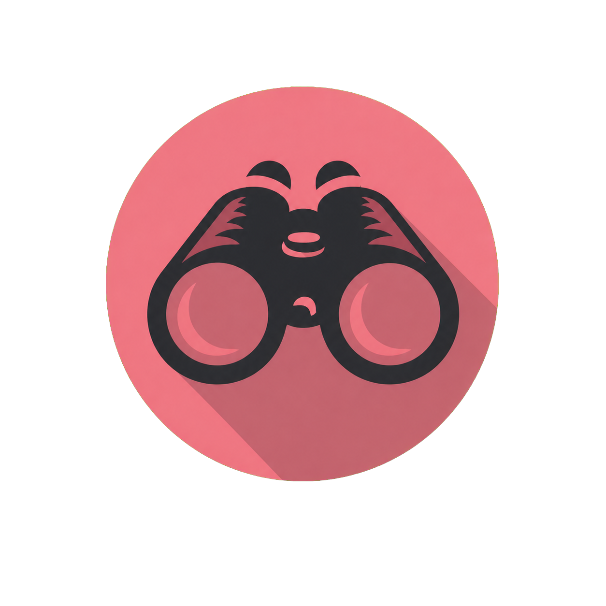

Download location
Choose where saved media files are stored.
Loading…

Configure automatic browser playback capture.
Choose where saved media files are stored.
Loading…
Automatically detect direct media played in Edge or Chrome.
Load this folder as an unpacked extension:
C:\Projects\MediaScout\browser-extension
Install the local extension once, then Media Scout can detect supported media as it plays in your browser.
opera://extensions
chrome://extensions
edge://extensions
Paste the matching address into the browser address bar and press Enter.
Use the Developer mode switch on the extensions page. In Opera GX it is located in the upper-right area.
Choose the Media Scout extension folder shown below—not an individual file inside it.
Loading…
Leave Media Scout running, open Instagram or Bilibili in the browser, and play a public video. Its card should appear on the Capture Shelf automatically.
Media Scout currently detects public videos from these platforms through the browser companion.

A local-first workspace for authorized direct media.